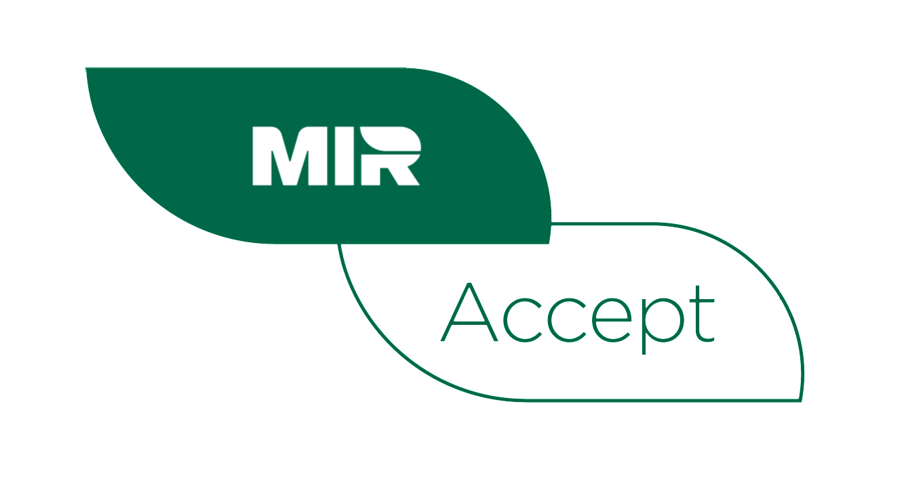
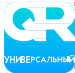

Varim пляжная доставка — доставка напитков и еды от кофейни Varim на пляж Белохолуницкого водохранилища.
Как сделать заказ
Выберите позиции в меню и добавьте их в корзину.
Укажите имя, телефон и место на пляже (ориентир).
Отметьте согласие с офертой и политикой обработки персональных данных и нажмите кнопку оформления.
Оплатите заказ банковской картой на защищённой платёжной странице банка или через СБП.
После успешной оплаты на экране появится подтверждение заказа, а на указанный e-mail или телефон придёт электронный кассовый чек — он подтверждает заказ и оплату.
Заказ передаётся в работу, курьер доставит его к указанному месту.
Доставка
Зона доставки: пляжи и береговая линия Белохолуницкого водохранилища, г. Белая Холуница, Кировская обл.
Время работы доставки: в часы работы кофейни Varim в Белой Холунице, в купальный сезон.
Ориентировочное время доставки: 20–40 минут с момента оплаты. В плохую погоду и при высокой загрузке срок может увеличиться — мы сообщим об этом по телефону.
Минимальная сумма заказа для доставки — 1000 ₽. Доставка заказов от 1000 ₽ бесплатная.
Заказ передаётся покупателю лично в руки по указанному ориентиру.
Доставку осуществляет сам продавец — ИП Шулаков А.С. своими силами (курьер на лодке). Продавец несёт ответственность за сохранность, комплектность и качество заказа до момента его передачи покупателю.
Оплата
Способы оплаты заказа на сайте:
Банковской картой онлайн. К оплате принимаются платёжные карты: МИР, VISA Inc, MasterCard WorldWide.
Через Систему быстрых платежей (СБП) — по QR-коду или ссылке в приложении вашего банка.
Для оплаты товара банковской картой при оформлении заказа выберите способ оплаты: банковской картой. Обработка платежа происходит на авторизационной странице банка-партнёра ПАО КБ «УБРиР», где необходимо ввести данные вашей банковской карты:
номер карты;
срок действия карты (указан на лицевой стороне карты);
имя держателя карты (латинскими буквами, точно так же, как указано на карте);
код CVC2/CVV2.


Безопасность платежей
Данные Вашей платежной карты гарантированно защищены в соответствии со стандартами безопасности PCI DSS. Данные карты вводятся на защищенной банковской платежной странице, передача информации происходит с применением технологии шифрования SSL. Дальнейшая передача информации происходит по закрытым банковским сетям, имеющим наивысший уровень надежности. Для дополнительной аутентификации Держателя карты используется протокол 3D-Secure для VISA и Mastercard и протокол EMV 3DS (Mir Accept 2.0) для карт МИР. Если Эмитент поддерживает данную технологию, Вы будете перенаправлены на его сервер для ввода дополнительных реквизитов платежа. Для протокола EMV 3DS (Mir Accept 2.0) может отсутствовать отдельная страница для ввода дополнительной информации для подтверждения платежа в случае выполнения автоматизированной аутентификации на стороне эмитента карты.
Продавец не получает и не хранит данные банковских карт.
Советы по безопасности платежей:
берегите свои пластиковые карты так же, как бережёте наличные деньги;
никогда не передавайте полный номер своей карты по телефону каким-либо лицам или компаниям;
всегда имейте под рукой номер телефона для экстренной связи с банком, выпустившим вашу карту, и в случае её утраты немедленно свяжитесь с банком;
вводите реквизиты карты только при совершении покупки.
После оплаты покупателю направляется электронный кассовый чек на указанный e-mail или номер телефона в соответствии с 54-ФЗ.
Все цены указаны в рублях РФ.
Отмена и возврат
В соответствии со ст. 26.1 Закона РФ от 07.02.1992 № 2300-1 «О защите прав потребителей» покупатель вправе отказаться от заказа в любое время до его передачи. Приготовленная продукция общественного питания надлежащего качества возврату и обмену не подлежит.
Заказ можно отменить до начала его приготовления, позвонив по телефону +7 (922) 781-22-03 или написав на varimkofe@bk.ru. В этом случае деньги возвращаются в полном объёме.
Если заказ не был доставлен по нашей вине, доставлен не полностью или с ошибкой, мы вернём стоимость недоставленных или неверных позиций либо заменим их.
Претензии к качеству продукции принимаются в момент получения заказа или в течение 1 часа после него.
Возврат производится на ту же карту или счёт, с которых была оплата. Срок зачисления — до 10 рабочих дней в зависимости от банка покупателя.
Реквизиты продавца
Продавец
Индивидуальный предприниматель Шулаков Андрей Сергеевич
ИНН
432906586719
ОГРНИП
325430000026842
Юридический адрес
613150, Кировская обл., г. Слободской, ул. Железнодорожная, д. 27а, кв. 8
Адрес точки (кофейня, откуда ведётся доставка)
613200, Кировская обл., г. Белая Холуница, ул. Здравоохранения, 5